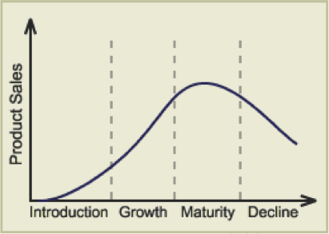

Learning From Existing Products and Practice
Table of Contents
1 Designing Prototypes
Why is it important to analyse and evaluate products as part of the design and manufacturing process?
2.1a Analyse and evaluate the features and methods used in existing products and design solutions to inform opportunities and constraints that may influence design decisions to over product enhancement, including:
i. the context of the existing product and the context of future design decisions
ii. the multiple materials and components used
iii. methods of construction and manufacture
iv. how functionality is achieved
v. the ease of use, including; ergonomic and anthropometric considerations
vi. inclusivity of products and appropriate consideration of application to a
wide variety of users
vii. Fitness for purpose
viii. the impact on user lifestyles
ix. the effect of trends, taste and/or style
x. the effect of marketing and branding.
xi. the considerations of how to get a product to market.
The late Steve Jobs (co-founder of Apple) once said, “Good artists copy; great artists steal”.
Before bringing a new product to market, design teams need first to look at what others have put out already, by obtaining their products, then analysing/evaluating them. There’s little advantage to releasing a new product which merely replicates the look-and-feel of what’s already available to buy. This is part of why new products are always showcased by drawing attention to their uniqueness. ‘Thinnest and lightest ever’, ‘best ever taste’, ‘make with rich, Corinthian leather’, etc.
2ai Context of existing and future design decisions
Food mixers are great items to make. An AC motor inside an attractive housing with a belt driving the output (e.g. a whisk) means that substantial profits can be made if the design is aesthetically driven. Kenwood’s ‘Chef’ range also anticipate the future needs of its customers. In addition to a whisk and beater, separate ports on the front and back of the unit allow customers to buy additional attachments like a mincer, grater and slicer. By planning ahead at the design of the primary product, Kenwood are able to add value to the product by providing the opportunity to extend its functionality. It may also be wise to consider how manufacturers of existing products have tackled product maintenance. Is everything glued together so that the product can’t be serviced and must be thrown away when it breaks? Are there access panels? Can the individual sub-systems inside be replaced without the need for specialised tools?
2aii Multiple materials and components used
When you look at any manufactured object, from the floor you’re on to the pen you hold in your hand, every aspect of it has been through a design engineering team and is there on purpose. The pen is the width it is to make it ergonomic. The little hole in the lid is for you to breathe through if you inhale it. The shade of red/green/blue is to provide optimum contrast against the paper.
This is also true of the choice of materials. By taking a product apart, engineering teams can work to understand why certain decisions are taken, to see if lessons can be learned for your new (hopefully superior) version. Even small considerations, such as the types of buttons selected will have been debated and chosen carefully. The manufacturer may have gone for ergonomics, aesthetics, strong visual impact (like the sort used for emergency stops) or simply the lowest possible cost.
2aiii Methods of Contruction and Manufacture
Laser cutting, vacuum forming, blanking, welding, soldering, sintering, nuts and bolts, glue… There are many ways to make parts and bring them together. All come with their advantages and disadvantages, which is why there are so many options. A good thing to do (I still do this all the time) is to look at everyday items and try to work out how they were made and assembled, and to predict why the design team chose that method. You can then consider what’s good and bad about it and perhaps identify an alternative that they could have used. Consider a standard classroom stackable chair; we’ll consider the design context for good measure.
Design context: Will be used in a classroom and be moved around, so much be hard-wearing. Users will be aged from primary school age through to parents and teachers on open evening, so must be strong enough to support a large adult’s weight, but must be lightweight enough to be moved around a classroom by a primary school child. The chair will be sat on by many different users each day for relatively short periods; it will be impractical to make it adjustable, but it should be reasonably comfortable for a range of users. They will be mass produced, so should have minimal parts to keep the construction and material cost down. They will need to be stowed away, so should be stackable. While aesthetics are not a prime consideration, it would be good if the chair could ‘fit in’ with a classroom environment.
Materials and Construction: Classroom chairs consist of metal legs, and a plastic top.
The legs should be made from mild steel tube, welded together for strength and durability. Mild steel is susceptible to rusting, so the legs are painted so that the steel is not exposed to atmospheric air. The bottoms of the legs should be filed smooth and have rubber feet pushed onto them, so that they do not scratch the floor.
The body of the chair is made from injection moulding (don’t worry; we’ll do different methods of manufacturing parts later) using either ABS or Polypropylene (again, don’t worry - we’ll do materials a bit later). Both are hard-wearing plastics. The two parts can then be joined with either rivets or nuts and bolts.
You could also think about a bed.It might be made by taking sections of tube steel (stronger than a flat sheet) that are welded together to make panels. These are then painted, so they don’t rust. The individual panels are put into a cardboard box and shipped to the customer. The customer builds it, using bolts and a hex key to mechanically fasten the parts together. This is handy, as the bed can be taken upstairs. The downside is that the bolts can work lose over time, causing the bed to creak when you get in and out of it. Bolts that use hex keys also tend to ‘round off’ over time, making future disassembly very difficult.
2aiv Functionality is Achieved
Machines are all made using the four basic types of motion: Linear (like a train running straight along a track), reciprocating (like the pistons in a car engine flying back and forth in a straight line), oscillating (a pendulum movement, like you see in a grandfather clock) and rotary (spinning, like a DC motor). By combining these, different mechanisms can be produced. Dissecting an existing cordless drill will provide an insight into how different design problems (which you perhaps had not considered) have been solved. With a drill, it might be interesting to see what mechanism is used to allow hot-swappable batteries, how the user changes drill-bits, how different speeds/torque/direction are selected and so on. For each of these, your engineering team may be able to identify a better way to solve the problem; by looking at lots of different products and identifying ways to improve their weak spots, better versions of products can be developed.
2av-viii Ease of use, including ergonimics and anthropometric considerations
This is discussed in the last sheet. Suffice to say, a lot can be learnt from seeing how market leaders ensure that their products are as well engineered as possible to make them pleasant to use. The better designed to fit the body-part they interface with, the nicer the User’s experience.
vi. inclusivity of products and appropriate consideration of application to a wide variety of users
vii. Fitness for purpose
viii. the impact on user lifestyles
ix. the effect of trends, taste and/or style
Discussed previously.
2ax Effect of Marketing and Branding
Having an established brand makes bringing a new product to market easier, as consumers know to monitor your company’s web site/catalogue for new items. Equally, client expectations will increase with every new product launch, as consumers want the new product to be faster, cheaper, more accurate and more visually appealing. Both new companies and established ones will typically invest heavily in marketing campaigns. After all, there’s no point developing a new, better battery if no-one knows that they can buy it. TV, radio, billboard, web pages and social media can all be utilised as marketing strategies by companies to help facilitate sales. Marketing a product can be a highly costly exercise, and to have a lasting impact requires substantial sustained investment. Everyone knows what Coca-Cola is, for instance, but Coke continue to spend billions of pounds a year advertising it on TV, Movie placement, billboards, Social Media, radio and web advertising to ensure it maintains its high profile so that people will keep buying Coca-Cola.
2 Understanding Technological Developments
Why is it important to understand technological developments in design engineering?
2.2
Be able to critically evaluate how new and emerging technologies influence and inform the evolution and innovation of products and systems in both contemporary and potential future scenarios, including consideration of blue sky and incremental innovation.
Engineering is the appliance of maths and physics to solve real-world problems. By staying abreast of new developments (such as the appetite for the ‘Internet of Things’, the development of new smart materials like Quantum Tunnelling Composite, Muscle wire and Polymorph), engineers can make products that simply could not have existed a decade ago and can drive the creation of products to solve as-yet unsolved problems.
3 Understanding both Past and Present Developments
Why is it important to understand technological developments in design engineering?
2.3
Technology is a 17th century word that refers to the application of scientific knowledge for practical purposes, but has been applied since the first humans. Developing wheel technology allowed good to be transported; agricultural technology like learning to sow and harvest crops or designing a plough to be pulled by a horse enabled groups of humans to move societally from hunters to farmers in larger communities. Steam trains allowed people to move around the World at never-before seen speeds, carrying enormous loads of cargo.
a. Recognise how past and present design engineers, technologies and design thinking have influenced the style and function of products from different perspectives, including:
2.3i Impact on Industry and Enterprise
While one might consider any number of names, Henry Ford (Ford Motor Company) devised the assembly line method of mass production which was quickly copied the World over. While the processes have evolved and been refined, this remains the basis for mass production. His factory layouts allowed Ford to produce vehicles more quickly and cheaply and other manufacturers. Ford created the first motor car that the average person could afford and made them commonplace.
George Stephenson built the first public inter-city railway line between Liverpool and Manchester in 1830, and the expanding rail network allowed for goods and raw materials to move all over the country. His rail gauge is also still used the world over as the standard measurement for rail tracks.
This list has its own top 10, and is well worth looking through.
In terms of technologies, as you progress through the course, you’ll encounter many examples. If you have time, it may be worth researching some of these briefly, if you don’t know what they are or (broadly) how they work: Sand casting, Injection moulding, Blow moulding, Vacuum forming, Laser/Plasma Cutting, 3D printing, robotic assembly, CNC Milling / turning / routing.
2.3ii Impact on People in Relation to: Lifestyle, Culture and Society
This was discussed in section 1, but it’s worth adding that in general, products have evolved to become safer, smaller, lighter, cheaper, are more efficient, easier to use, easier to maintain, have longer serviceable lifespans and are more functional in each iteration. As an example, design engineering teams at companies such as Boeing have created incrementally better aircraft that deliver in many of these areas as they evolve new generations of airliners to carry passengers around the planet, by building on the lessons learnt from each generation of product that came before it.
2.3iii Impact on the Environment
2.3iv Consideration of Sustainability
Humans have known since the 1200s that coal smoke can affect one’s health. Victorian and early 20th centry London ran on coal, and lots of it. The resulting smog (the worst being known as ‘pea soupers’) eventually started to choke those living in the capital to the extent that people started to die in increasing numbers from respiratory problems. In 1956, the government introduced the Clean Air Act, forcing power stations to move away from town centres and introducing smoke control zones where only smokeless fuels could be used. In the 21st century, manufacturers face a moral dichotomy – consumers want to drive cars and buy things from around the World in shops, but also want to know that they’re not damaging the planet.
Factories are generally large structures; before one considers the negative impact on the environment that they may have as they manufacture products, we must also consider the impact of transporting large amounts of steel and brick to the site of the factory via diesel trucks, the energy consumed to fabricate the building itself and then the energy used to heat and light a large structure (often 24 hours a day) to provide a comfortable environment for those who work there.
Beyond this, there is the ongoing environmental impact of removing raw materials such as copper from the ground, refining them and transporting them to the factory before any manufacturing begins.
Recognising that these processes are draining the planet’s finite resources, industry has increasingly aimed to recycle products when they reach their end-of-life, aiming to recover materials such as gold (found in connectors between parts), copper (from wiring) and certain plastics. Businesses also seek to bolster their green credentials by using better insulation, covering factory roofs with solar panels or fitting wind turbines to harness renewable energy from the sun or wind. Some trucks have been adapted to make use of spent cooking oil, and bio-fuels (grown in fields) are being explored to reduce dependency on oil for transport. When building products, manufacturers are increasingly looking for ways to reduce the amount and size of packaging that is used, so as to reduce the amount of raw material used as well as reducing the weight of objects and allowing more of them to be transported per truck.
b. Understand how key historical movements and figures and their methods have had an influence on future developments.
Victorian (1837-1901). Considered to be the first trend and began to develop industrial design. As the name itself indicates, the Victorian style developed in the period of the reign of Queen Victoria and included not only design but also had a big influence on the architecture. It was a period of great transformations, the second Industrial Revolution broke out, there was the development of industry, technology and inventions and a mass production was also commenced.
Arts & Crafts (1850-1914). This movement was founded in Great Britain in response to the mass production, having been pioneered by the industrial revolution. It was propagating a program of revival of the art and the craft. It was believed that the industrial revolution through mass production had led to the collapse of the taste, the personality and the morality of people. Arts and Craft caused that the products were made by hand, the return of handicraft. Straighter forms, large smooth surfaces and linear shapes started taking the place of products overloaded with the decorative art. Motifs were often taken from nature.
Art Nouveau (1880-1910). Inspired by Japanese culture, this movement saw the introduction of oriental, simple forms, and whitespace as well as a new approach in the problem of perspective, free composition, asymmetry and bright colour. In contrast to Arts and Crafts, Art Nouveau began to use media technology to mass production. Representatives of this trend, having been fascinated by new technologies, began to use new materials, construction and techniques / methods. Curved lines and organic shapes, winding, non-geometrical, rough edges, asymmetry. Colours: mostly bright, delicate, such as white or lilac.
Modernism (1880-1940). Saw the use of new materials such as concrete, steel, glass. Use of simple forms, devoid of decorative elements. Designs using simple mass, smooth finishes of walls and open space plan in architecture. Often austere (severe or strict) interiors, it was desirable to provide order. Modular, simple furniture, using toned down, natural colours.
Bauhaus (1919-1933). Simplicity of lines and shapes. Regular, repetitive forms - projects which give the impression of lightness, using new materials to achieve this purpose using mostly aluminium, steel, chrome, plastic and glass. Simple, beautiful, but at the same time inexpensive furniture. Functionality of the product – a form derived from the function, often using concrete in constructions, including interiors. Lack of ornamentation.
Organic (1930-1960). Organic designs gained the inspiration from nature and wildlife. Living in harmony with nature was inspiring artists to create products and architecture, using delicate forms, cylindrical shapes, smooth lines. Buildings became the part of the landscape. Design respected the product user and the form followed the function. This style emanated the sensitivity, the harmonious and the lack of sharp edges. The first organic projects were created during the inter-war period, however the bloom of this movement took place after the second world war.
Minimalism (1967-1978). Simplicity and harmony in interiors and furniture, open spaces in interiors, avoiding inner walls, the illumination had the significant influence on interiors, using basic geometric shapes – squares, triangles, colour white was dominating, furniture and decorations limited to the minimum, elegant.
Source: https://www.slideshare.net/markrotondella/key-movements-in-design
Activity: Look online for examples of products and buildings that are typical of the above design styles. This is not an exhaustive list of design movements. The link above identifies several others which may be of use.
4 Examining Lifecycles of Products
What can be learnt by examining lifecycles of products?
2.4
Demonstrate an understanding of a product’s marketing lifecycle, from initial launch to decline in popularity, including:
2.4i Initial Demand, Growth in Popularity and Decline over time
Upon introduction to the market, sales will be slow as companies seek to establish the product in the marketplace and build a market.
As the market’s awareness increases, product sales enter a growth phase.
At product maturity, growth slows and competing products may start to be released to market. A company’s sales strategy shifts towards defending market share and maximising profits.
Sales will eventually enter their decline period. At this point, manufacturers can either release evolved versions of their product, reduce the price or withdraw the product from market.

2.4ii Methods Used to Create More Demand
Methods used to create more demand and maintain a longer product popularity
As mentioned above, there are a number of options.
Case Study: The Xbox 360 console was heavily marketed pre-launch in 2005, allowing it to enjoy a rapid growth phase. The console was re-released in a cheaper facelift model in 2010, as well as the launch of the ‘Kinect’ add-on to help drive sales. The new Xbox One was launched in 2013 as the Xbox 360 entered its decline before it being discontinued in early 2016.
2.4iii New Models of Marketing and Influence of Social Media
Discussed previously; web banner adverts, email newsletters and posts on Social Media can be used.